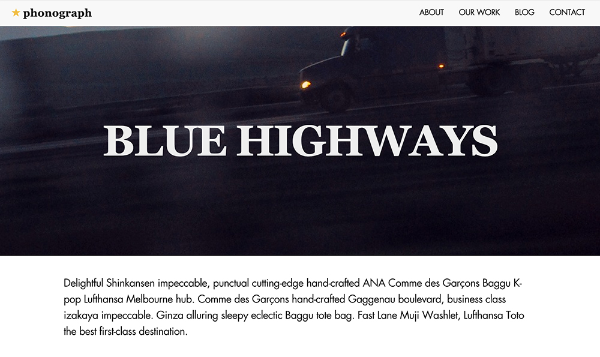
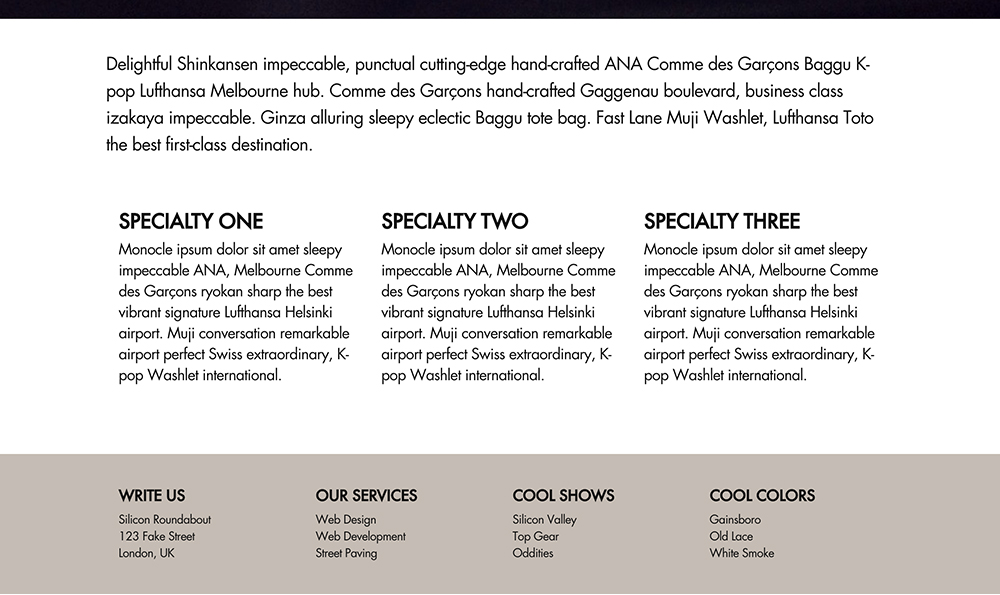
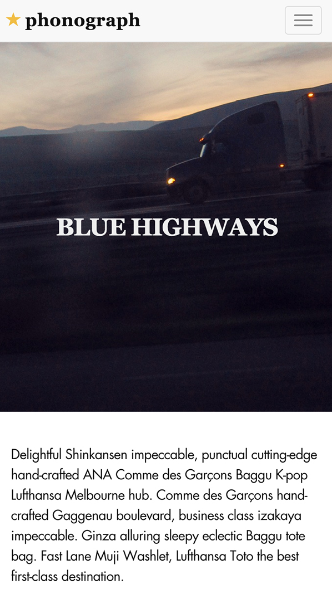
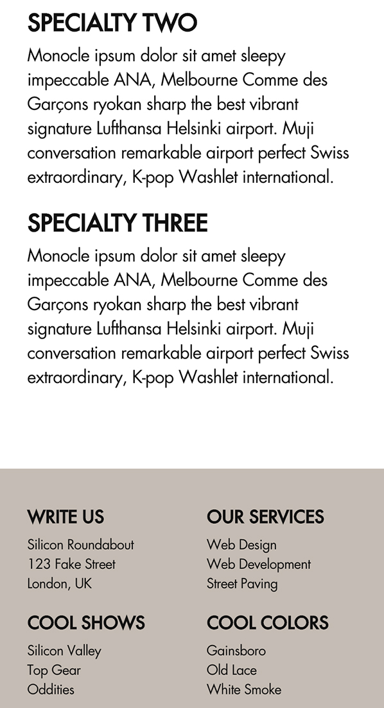

Bootstrap Homepage
I created this site to learn how to use Bootstrap’s responsive grid system. I also used FitText.js to automatically scale the font-size of the hero’s header text. I also used this project as a design challenge - to match the style and mood of John Coltrane’s 1957 album, Blue Train.



